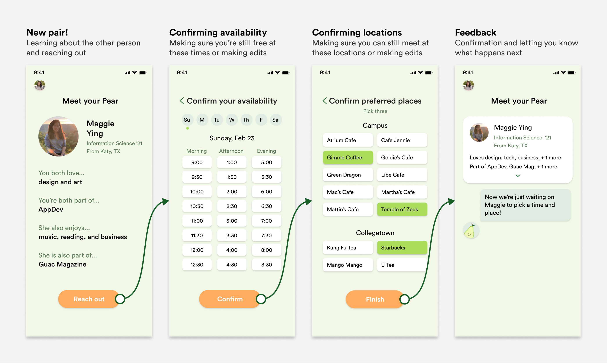

Pear is a platform for students to meet new people and form meaningful connections.
Timeline
January 2020 - Present
My Role
Product Designer
Illustrator
User Researcher
Platform
iOS App
Android App
Team
What is Pear?
Automatic pairings: Putting yourself out there is hard. A virtual, one-on-one introduction every week invites students to get to know each other better.
Matching based on similarities: With common ground, people are more likely to follow through with pairings have a positive experience during the meet-up.
More friends, less “clout”: There is enough peer pressure and resources around professional development already. We hope to challenge this and create a comfortable space focused on making new friends.
Personalized with students’ interests and campus groups
Weekly pairings as opportunities to reach out
Scheduling the meetup and making it happen
Why do we need Pear?
Too often at Cornell, we pass by other students we vaguely know, drift apart from people, or even don’t know the names of others in the same student club. Within our project team we’ve found that 30 minute chats can help people learn about each other, improve culture, and sometimes lead to life-long friendships.
After a few semesters of coffee-chatting each other we saw an opportunity to for everyone at Cornell to break awkward barriers and improve campus culture.
But what do other students think?
We interviewed and surveyed other Cornell undergraduates about how they feel about their community and relationships with other students. Here are highlights of what we learned:
Many people have close friends but also many other acquaintances that they wish they knew better.

Everyone is open to chatting, but don’t want to reach out due to laziness or fear of inconveniencing others.

Students don’t know where to go to meet more new people with similar interests.
The Problem
Cornell students want to form meaningful connections with other students who share interests and hobbies. But this is difficult because:
- They do not know how to initiate the interaction.
- They are not used to branching out beyond their current circle.
Listening to how other students struggled to deepen their friendships or find the time and energy to meet new people helped us narrow down the goals for our product:
- Connect people with common interests and groups
- Minimize the friction of reaching out and scheduling meetups
Where to start
After discussing with our team of superstar designers, engineers, and strategists we decided on some constraints and product direction.
Constraints
- MVP in one semester
- No instant messaging feature
Product requirements
- Personalization
- Matches
- Scheduling
Personalization
First, we need some information about the students to pair them up with others who have common ground to talk about. This content also helps students learn a bit about each other before meeting up. We based the onboarding flow on how students feel more excited and comfortable meeting new people with similar background, interests, or campus groups. We also want to give people a way to connect or communicate outside of the app, since messaging is outside of our constraints.
A new pear every week

This cycle of pairings solves three problems students experience:
- Not knowing many people who share specific interests
- Struggling to craft intro messages asking to meet with someone they don’t know
- Feeling unsure if the other person has mutual desire to meet
Explorations

Ultimately, we decided to highlight similarities with a clear destinction and label and give thorough information on the other person’s background and appearance build trust before deciding to meet up.
Scheduling
Students have the most frustration with deciding when and where to meet in our busy schedules. Many complained about having to communicate back and forth, or even not getting a response at all.
Minimizing the friction for scheduling will reduce the barrier for meet-ups. That way, users can focus more on building relationships rather than scheduling.
Initial Approach
We thought that due to everyone’s busy schedules, students would want to change their availability each week.
Revised Approach
However, we realized that students still have typical routines that would be tedious to repeatedly enter. Our revised approach lets them input this once and pre-fill it when reaching out.
Early Explorations

Final Scheduling Flow
What's up with this fruit?
Pear is a play on the word “pair”, alluding to how the app matches people in pairs based on commonalities. The name also opened up an exciting opportunity space for creative character design and brand identity centered around the fruit.
Our pear friend gives updates and reminders about pairings and scheduled meetups. It helps prevent bad experiences with pairings who don't respond or don't show up. It’s also the friendly voice that adds a personal and human feel to the app.

Examples: Pear in action

Putting it together:
These prototypes are made in Framer.
Onboarding and Personalization
Pairings and Scheduling
Looking forward
Unfortunately, COVID-19 abruptly interrupted our team’s in-person workflow and Pear will be released in Fall 2020. However, we were still able to conduct remote user testing with our prototype. We gained valuable feedback that sparked ideas of how to improve, including:
- Revisiting content strategy
- Creating a space for instant messaging
- A community feed of successful meetups to encourage following through with them
The pandemic also may change people‚Äôs attitude or ability to participate in in-person meetings with strangers üò¢. As it unfolds, the team will keep this in mind in shaping our product. However, we are optimistic that there will always be a need to feel connected with the community, whether that will be at a campus cafe, over video calls, or some other solution.
What I learned
Tight knit collaboration. Thanks to constant and thoughtful feedback from other designers and our developers, I learned to not only respond at lightning speed to Slack messages, but also appreciate different perspectives and improve my design work as a result.
Designing on a mission. I truly loved spending so much time thinking about ways to improve the Cornell community. I learned that wholeheatedly believing in the mission of a product fuels my productivity and creativity.
Scrap that! We made countless mistakes and iterations that will never see the light. But pushing through those challenged us to think of other edge cases and possibilities and ultimately create a better app. I can‚Äôt wait to see where it goes üöÄ
Bonus: I loved exploring illustration and branding as well! Here’s some of the visuals up close.
For all the details of the design process, contact me!